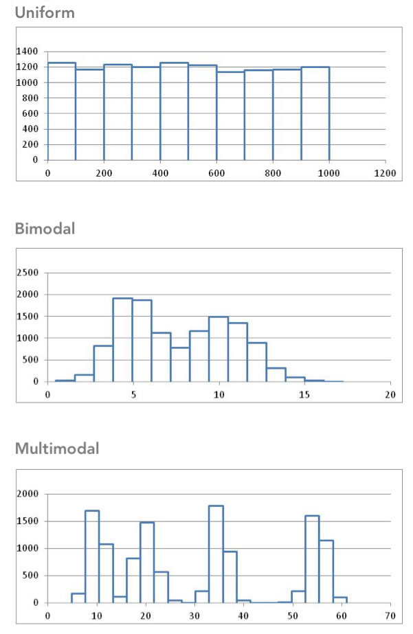

Lesson 3: Describing Quantitative Data (Shape & Center)
Review of the Five Steps of the Statistical Process
We will use the five steps in the Statistical Process throughout the course. Recall the five steps (and the mnemonic "Daniel Can Discern More Truth) before you begin this lesson.
|
Step 1: |
Daniel |
Design the study |
|---|---|---|
|
Step 2: |
Can |
Collect data |
|
Step 3: |
Discern |
Describe the data |
|
Step 4: |
More |
Make inferences |
|
Step 5: |
Truth |
Take action |

Shape of a Distribution
Cost to Treat Tuberculosis in India


Step 1: Design the study.
Tuberculosis (TB) is the deadliest bacterial disease in the world. In 2009, nine million new cases of tuberculosis were diagnosed, leading to almost 2 million deaths worldwide. Currently, the principal vaccine used to prevent tuberculosis is Bacille Calmette Guerin (BCG). Unfortunately, BCG is only moderately effective at preventing tuberculosis. Historically, India has had a high number of tuberculosis cases. The Indian Government wants to reduce the prevalence of this disease.
In this activity, you will compare the average costs of treating a person who contracts tuberculosis to the costs of preventing a case of tuberculosis in India.

Step 2: Collect data.
Health Care records of tuberculosis patients in India were surveyed to estimate the cost to treat patients with tuberculosis. The following data are representative of the total costs (in US dollars) incurred by society in the treatment of 10 randomly selected tuberculosis patients in India.
These costs include health care treatment, time missed from work, and in some cases utility lost due to death.

Step 3: Describe the data.
Visualizing Quantitative Data: Histograms
The following data are representative of the total costs (in US dollars) incurred by society in the treatment of 10 randomly selected tuberculosis patients in India.
To help us visualize these data, we will create a graph called a histogram. To make a histogram, we will divide the number line from 0 to 35,000 in seven equal parts. We will then count the number of data points in each of these intervals:
|
Interval |
Number of Observations |
|---|---|
|
At least 0 and less than 5,000 |
2 |
|
At least 5,000 and less than 10,000 |
1 |
|
At least 10,000 and less than 15,000 |
3 |
|
At least 15,000 and less than 20,000 |
2 |
|
At least 20,000 and less than 25,000 |
1 |
|
At least 25,000 and less than 30,000 |
0 |
|
At least 30,000 and less than 35,000 |
1 |
For each of these intervals, we draw a bar on the histogram. The width of the bars is determined by the width of the interval (5000 in this example). The height of the bars is equal to the number of observations that fall in each interval. As we look at the histogram shown below, we see bars ranging from $0 to $35,000. We also see higher bars in the middle between $10,000 to $20,000 show that these values are more commonly occurring than the other values. If we computed the average of the values contained in our histogram, we would compute the number \[ \frac{15,100 + 19,000 + 4,800 + 6,500 + 14,900 + 600 + 23,500 + 11,500 + 12,900 + 32,200}{10} = 14,100 \] showing that the center of the histogram (or average) is at $14,100.

You can watch this short video of how to create a histogram in Excel, or follow these steps:
Step 1
Start by typing the data into a column of cells in Excel: each data point into its own cell, as shown below. Then highlight the data.

Step 2
Go to the Insert ribbon in Excel and select the histogram icon from the “Charts” section of the ribbon. Then select the first option of histograms presented.

You will notice that the histogram does not look much like the histogram above yet. The number and size of bins in a histogram can drastically change the apparent shape of the distribution. It is worth experimenting with a different number of bins so the true shape of the distribution of data is revealed. To change the number of bins go on to the next steps.
Step 3
Be sure the graph is selected, so that you can select the “Format” ribbon. In the upper left corner of the ribbon, select “Horizontal Category Axis” in the drop down box. Then click on “Format Selection”

Step 4
A menu of options will open on the right side of the screen. You can adjust the bin width or number of bins. In this case, though we can’t make it match, in order to make the histogram look as much as possible like the one shown above, we will choose a bin width of 5000.

Excel shows the starting and ending values for each bin. For example, the first bin goes from 600 up to 5,600. We see there are two data points contained in that bin, represented by the bin’s bar height. The next bin contains only one of our data points, it includes any value greater than 5,600 up through, and including, 10,600. And so on.
This histogram does not look exactly like the histogram pictured above, but it is close. To make it match exactly you can use the “Overflow bin” and “Underflow bin” options; but that is beyond what we will discuss here.
Making Inference About the Population
After summarizing the data from our sample of the populations both numerically and graphically, we can use this information to make inference about the full population.

Step 4: Make inferences.
In the past, the total average cost to society to treat a case of tuberculosis in India was known to be $13,800. As shown in our Step 3 calculations, the 10 randomly selected patients showed an average cost that was higher than the historic value at $14,100. This might make us believe that the actual total average cost to society is also $14,100. However, in depth statistical calculations (that you will be taught how to do later this semestr) show that there is a 46% chance that our sample had an average of $14,100 just by random chance. This isn’t too hard to believe since we only had a sample size of 10 people, and $14,100 is only $300 above $13,800, so it turns out to be fairly likely (46% chance) that because of random chance our sample had an average that was a little higher than the actual value from the population. So we will conclude that the total average cost to society is still essentially the same as it has been in the past.

Step 5: Take action.
After making inferences, you take action. The motivation for conducting a study like this is usually to see if there is inflation in the costs.
- Given our conclusion in Step 4 (that the results of our random sample being at an average $14,100 had a 46% probability of just being caused by random chance) do you think the Government of India needs to take any special action to stop the increase in the cost to treat tuberculosis?
One benefit of using a histogram is that it allows you to visualize the distribution of the data. A histogram illustrates the overall shape of the distribution of the data. The height of the bars show how many observations fall in that range.
We will describe the shape of the distribution of a data set using the following basic categories: symmetric, bell-shaped, skewed right, and skewed left. Additionally, we can label the shape of a distribution as uniform, unimodal, bimodal, or multimodal.
A distribution is symmetric if both the left and right side of the distribution appear to be roughly a mirror image of each other. A special symmetric distribution is a bell-shaped distribution. When data follow a bell-shaped distribution, the histogram looks like a bell. Bell-shaped distributions play an important role in Statistics and will play a role in most of the future lessons.
A distribution is right-skewed if a histogram of the distribution shows a long right tail. This can occur if there are some very large outliers on the right-hand side of the distribution. A distribution is left-skewed if a histogram shows that it has a long tail to the left.

If a distribution has only one peak, it is said to be unimodal. The three distributions illustrated above are all unimodal distributions. Some people might argue that there are several peaks in the GPA data, so it should not be considered unimodal. Even though there are jagged bumps in the histogram, it is important to visualize the overall shape in the data. When interpreting a histogram, it can be helpful to blur your eyes and imagine the overall shape after smoothing out the bumps. If the overall trend indicates that there is more than one bump, then we do not consider the distribution to be unimodal. We will usually only work with unimodal data sets in this course.
Some distributions have no distinct peak, others have more than one peak. When there is no distinct peak, and the histogram shows a relatively flat shape, we might say the data follow a uniform distribution. If there are two distinct peaks, a distribution is called bimodal. If there are more than two peaks, we refer to the distribution as multimodal.

Center of a Distribution
Step 3: Describe the data.
Sometimes people talk about the “typical” BYU-Idaho student or the average waiting time for a bus. But what does it mean for something or someone to be “average?” How can we quantify what it means to be typical or average? In the example below, we will explore one way to define what “average” means.
When we talk about the “typical” or “average” value, we are essentially describing the center of a population. If we want to estimate the “average” costs to treat a tuberculosis patient, there are several ways we can do it.
Measuring the Center of a Distribution
Mean
The sample mean or sample arithmetic mean is the most common tool to estimate the center of a distribution. It is referred to simply as the mean. It is computed by adding up the observed data and dividing by the number of observations in the data set.
In Statistics, important ideas are given a name. Very important ideas are given a symbol. The sample mean has both a name (mean) and a symbol (\(\bar x\), called “x-bar”).
\[ \bar{x} \text{ is used to denote the sample mean} \]
You may have heard people refer to the sample mean as the average. Technically, the word average refers to any number that is used to estimate the center of a distribution. The mean, median and mode are all examples of “averages.” To avoid confusion, it is best to use the words mean, median, and mode instead of the word average, so that it is clear which “average” your are referencing.
- Practice finding the mean, \(\bar x\), for the tuberculosis treatment costs of the 10 patients in India by simplifying the following: \[\bar x=\frac{15100 + 19000 + 4800 + 6500 + 14900 + 600 + 23500 + 11500 + 12900 + 32200}{10}=\]
Median
The median is the middle value in a sorted data set. Half of the observations in the data set are below the median and half are above the median. To find the median, you:
- Sort the values from smallest to largest
- Do one of the following:
- If there are an odd number of values, the median is the middle value in the sorted list.
- If there are an even number of values, the median is the mean of the two middle values in the sorted list.
- Do one of the following:
- Practice finding the median of the tuberculosis treatment costs for the 10 patients in India. First, sort the data from smallest to largest.
- Since there are an even number of observations (n=10), the median is computed as the mean of the middle two values. Use your answer to the previous question to find the median of the data. What is the median?
Mode
The most frequently occurring value is called the mode. Sometimes there is more than one mode. For example, in the data set
\[{1,~~2, ~~2, ~~2, ~~3, ~~4, ~~4, ~~5, ~~5, ~~5, ~~6}\]
the modes are 2 and 5. Both of these values occur three times, which is more times than any other value.
If no number occurs more than once in the data set, we say that there is no mode. For the data set representing the costs to treat tuberculosis in India, none of the values is repeated. So, there is no mode for these data.
- For a particular data set, which of the following can occur?
There may be no mode.
There may be exactly one mode.
There may be several modes.
Only A and B can occur.
A, B, and C can all occur.
Excel Instructions for Mean, Median, and Mode
To calculate most numerical summaries (such as the mean, median, and mode) in Excel, follow these general steps:
Open Excel.
- Enter the data into Excel. There should only be one data value per cell.
Next, in the cell where you would like to store the numerical summary type an “=”, followed by the name of the function and then an open parenthesis, “(”.
Then, highlight the data (by clicking on it) to which you want to apply the function. The cell reference range will automatically be added to your formula. Then type a closed parenthesis, “)” and hit enter.
Caculate a Mean
For example, to calculate the mean of the sample of tuberculosis patient costs in India:
- put the data in Excel,
- in a blank cell type “=AVERAGE(”,
- highlight the data,
- close the parenthesis with “)” before hitting enter:
Notice that Excel calles the “mean” the “average.”
Calculate a Median
Simply replace the word “AVERAGE” in the formula with the word “MEDIAN”. Try it with the tuberculosis patient data, you should get the same value that was calculated by hand above.
Calculate a Mode
Similarly, to calculate a mode, replace the word “AVERAGE” in the formula with the word “MODE” or “MODE.SNGL”. NOTE: If you try this on the tuberculosis patient data, you will get a result of “#N/A”. This is Excel’s way of saying that a mode does not exist because there are no repeated values in the dataset.
Parameters and Statistics
We only have data on the cost to treat ten randomly selected tuberculosis patients. This represents a random sample from the population. The sample obtained by the researchers depends on random chance. If the study was repeated and a new sample of ten patients was randomly drawn from all cases of tuberculosis in India, would we observe the same data values? Certainly not!
However, if we took a second random sample from the population, we would expect the mean of the new sample to be somewhat similar to the mean for our original sample. And if we took a third sample of data, we should expect the mean of this sample to be different than the means of the other two samples. In fact, every sample will give us a different sample mean, but all of these sample means will be fairly similar in value.
One of the primary purposes of collecting and analyzing data is to estimate the true mean of a population. Since collecting data on the entire population is usually not feasible, we usually never know what the true mean is. So we estimate the true population mean with the sample mean from a single sample of data from the population.
The sample mean is an example of a statistic. A statistic is a number that describes a sample. The true (usually unknown) population mean is an example of a parameter. A parameter is any number that describes a population.
An easy way to distinguish between a parameter and a statistic is to note the repetition in the first letters:
- Population Parameter True (usually unknown) value describing a population
- Sample Statistic Estimate of the population parameter obtained from a sample
In the example above, the sample mean \(\bar x\) = $14,100 is a statistic. Over the last few years, the total mean cost to treat tuberculosis in India has been $13,800. This $13,800 is considered a parameter because it is the “known” value for the full population.
Different symbols are used to distinguish between the sample mean (a statistic) and the population mean (a parameter). The symbol for the sample mean is \(\bar x\). The symbol for the population mean is \(\mu\).
Perspective
The mean cost to treat the ten tuberculosis patients in the sample was \(\bar x\) = $14,100. This number gives us some useful information. However, if this was all we were given, we would not be able to distinguish the data above from a situation where the cost for each of the ten patients was exactly $14,100. Notice that if the cost for each patient was $14,100, the mean would be:
\[\bar x=\frac{14100 + 14100 + 14100 + 14100 + 14100 + 14100 + 14100 + 14100 + 14100 + 14100}{10} =14,100\]
Even though measures of center are important, we need to consider the shape, center and spread of a distribution of data. When evaluating data, it is sometimes tempting to compute a mean but to avoid creating a histogram. This can lead to errant decisions based on a misunderstanding or incorrect transcription of data. If there is a transcription error in the data, it is sometimes easiest to detect it as an outlier in a histogram.
Spread of a Distribution
You have studied two important characteristics of a distribution: the shape and the center. In this section, you will discover ways to summarize the spread of a distribution of data. The spread of a distribution of data describes how far the observations tend to be from each other. There are many ways to describe the spread of a distribution.
Standard Deviation and Variance
This activity introduces two measures of spread: the standard deviation and the variance.
Diving Elephant Seals
Researchers Jessica Meir and Paul Ponganis studied the characteristics of the northern elephant seal, Mirounga angustirostris (Meir, 2010). These seals have the ability to dive deep into the ocean. Researchers placed a thermistor (thermometer) and a backpack recorder on 13 different seals.
Data were collected over several days for each seal. The results are given in the file DivingElephantSeals.

Piedras Blancas, San Simeon, California
Photo by Michael “Mike” L. Baird bairdphotos.com
The following table summarizes some of the measurements collected on the seals:
|
Seal’s Name |
Number |
Mass |
Length of |
Thermistor |
Representative |
|---|---|---|---|---|---|
|
Chick |
267 |
238 |
3.5 |
Extradural |
36.70 |
|
Starburst |
33 |
162 |
3 |
Extradural |
37.19 |
|
Patty |
81 |
191 |
1 |
Extradural |
37.85 |
|
Bodil |
192 |
160 |
21 |
Hepatic Sinus |
37.91 |
|
Roberta |
480 |
148 |
15 |
Hepatic Sinus |
37.25 |
|
Larry |
218 |
158 |
9 |
Hepatic Sinus |
38.98 |
|
Per |
160 |
163 |
1.2 |
Hepatic Sinus |
38.16 |
|
Sir Richard |
312 |
226 |
2 |
Arterial (femoral) |
39.32 |
|
Jerry |
132 |
180 |
1.4 |
Arterial (brachial) |
39.70 |
|
Sammy |
70 |
211 |
1 |
Arterial (brachial) |
39.71 |
|
Knut |
242 |
288 |
2 |
Arterial (brachial) |
35.77 |
|
Jonesie |
401 |
261 |
3.5 |
Arterial (brachial) |
38.47 |
|
Butler |
621 |
151 |
8 |
Arterial (brachial) |
39.74 |
Mass
The data file DivingElephantSeals contains the mass in kilograms (kg) of the seals. How do we describe the distribution of the masses of the seals?
Use the data in the column labeled “Mass (kg)” to create a histogram and calculate the descriptive statistics.
Your histogram should look like this (a title and axis label have been added here):
Mass (kg) of the Diving Elephant Seals in Excel:

The descriptive statistics are summarized as follows:

Some of these statistics, such as the mean and median, should be familiar to you by now. In this section, you will learn about the standard deviation and the variance. Later in this reading assignment we will discuss the minimum, \(Q_1\), median, \(Q_3\), and the maximum.
The mean mass of the 13 seals is \(\bar x = 195.2\) kg. (Note that this value was rounded with one more decimal place of accuracy compared to the raw data). The mean is a measure of the center of the distribution.
There is a fairly large difference in the masses of the different seals. The smallest seal has a mass of 148 kg. The largest has a mass of 288 kg.
The standard deviation is a measure of the spread in the distribution. If the standard deviation is relatively small, then the data tend to be close together. If the standard deviation is relatively large, the data tend to be more spread out.
The standard deviation of the seals’ body mass is 45.8 kg. This number contains information from all the seals. If the seals’ masses had been more diverse, the standard deviation would be larger. If the seals were more uniform in their masses, then the standard deviation would have been smaller. If all the seals somehow had the same mass, then the standard deviation would be zero.
We are working with a sample. To be explicit, we call 45.8 kg the sample standard deviation. The symbol for the sample standard standard deviation is \(s\). This is a statistic. The parameter representing the population standard deviation is \(\sigma\) (pronounced /SIG-ma/). In practice, we rarely know the value of the population standard deviation, so we use the sample standard deviation \(s\) as an approximation for the unknown population standard deviation \(\sigma\).
At this point, you probably do not have much intuition regarding the standard deviation. We will use this statistic frequently. By the end of the semester, you can expect to become very comfortable with this idea. For now, all you need to know is that if two variables are measured on the same scale, the variable with values that are further apart will have the larger standard deviation.
Man vs. Seal
Roger Johnson compiled a collection of measurements on 252 men. The mean mass of the men was \(\bar x = 81.2\) kg. The standard deviation of the weights was \(s = 13.3\) kg.
The mean and standard deviation of the masses are in both cases smaller for the men than for the seals. This says that seals are generally larger than men and vary more in their weights. We compare these two distributions in the following histogram:

The mean mass of the men is less than the mean mass of the seals. We can see this, because the bulk of the data in the histogram for the men’s masses is to the left of the seals’. You will also note that the masses of the seals are more spread out than the masses of the men.
|
Men |
Seals |
|
|---|---|---|
|
Mean (kg) |
81.2 |
195.2 |
|
Standard Deviation (kg) |
13.3 |
45.8 |
|
Sample Size |
252 |
13 |
Length of Deployment (Days at Sea)
The variable “Length of Deployment (Days at Sea)” indicates the the number of days researchers collected data from each subject. The next two questions ask you to use the file DivingElephantSeals to create a histogram and compute the summary statistics for the “Length of Deployment (Days at Sea).”
- Using Excel, create a histogram for the “Length of Deployment (Days at Sea)” data.
- Find the missing value in the following table:
| Summary Statistics | |
|---|---|
| Mean: | \(\bar x = 5.51\) |
| Standard Deviation: | \(s = ?\) |
| Sample Size: | \(n = 13\) |

Photo by Michael “Mike” L. Baird bairdphotos.com
Representative Temperature
Consider the last column in the table of data. The “representative temperature” is the mean body temperature of the seal right before a new dive begins. The researchers were very interested in this information. One of the key things they studied was the change in the body temperature of the seals as they dove. They wanted to know if a decrease in their body temperature allows seals to dive for longer periods of time. It was important for them to establish a baseline temperature for each seal.
- Create a
* histogram to illustrate the “Representative Temperature” data.

- Using Excel, find the mean, standard deviation and sample size for the “Representative Temperature” data.
The standard deviation of the representative temperatures is \(s = 1.262\, ^\circ \text{C}\). When we consider body temperature measurements, this is a fairly small amount. Note that in this case, the standard deviation (\(s = 1.262\, ^\circ \text{C}\)) is much smaller than the mean (\(\bar x = 38.212\, ^\circ \text{C}\)).
Calculating the Standard Deviation by Hand
How is the standard deviation computed? Where does this “magic” number come from? How does one number include the information about the spread of all the points?
Bird Flu Fever

Avian Influenza A H5N1, commonly called the bird flu, is a deadly illness that is currently only passed to humans from infected birds. This illness is particularly dangerous because at some point it is likely to mutate to allow human-to-human transmission. Health officials worldwide are preparing for the possibility of a bird flu pandemic.
Dr. K. Y. Yuen led a team of researchers who reported the body temperatures of people admitted to Chinese hospitals with confirmed cases of Avian Influenza. Their research team collected data on the body temperature at the time that people with the bird flu were admitted to the hospital. In the article, they reported on two groups of people, those with relatively uncomplicated cases of the bird flu and those with severe cases.
The table below presents the data representative of the body temperatures for the two groups of bird flu patients:
| Relatively Uncomplicated Cases | Severe Cases |
|---|---|
| 38.1 | 39.1 |
| 38.3 | 39.5 |
| 38.4 | 38.9 |
| 39.5 | 39.2 |
| 39.7 | 39.9 |
| 39.7 | |
| 39 |
We will use these data to investigate some measures of the spread in a data set.
- Draw the number line below and illustrate the relatively uncomplicated cases by marking an x for each point. The first point has been plotted for you.


- What is the mean of the body temperatures for the relatively uncomplicated cases?
- How spread out are the “relatively uncomplicated” cases of the bird flu? Are the points relatively close together or spread apart?
Think about the points you marked in question 5 above. On your sketch of the number line, draw a vertical line at 38.8 degrees, the sample mean. Now, draw horizontal lines from the mean to each of your \(\times\)’s. These horizontal line segments represent the spread of the data about the mean. Your plot should look something like this:

The length of each of the line segments represents how far each observation is from the mean. If the data are close together, these lines will be fairly short. If the distribution has a large spread, the line segments will be longer. The standard deviation is a measure of how long these lines are, as a whole. It is a little tedious to compute the standard deviation by hand. However, the process is very instructive. As you work through the following steps, please remember the goal is to find a measure of the spread in a data set. We want one number that describes how spread out the data are.
The deviation of an observation from the mean is the directed distance from the observation to the mean. In other words, deviations are the lengths of the line segments you drew in the previous set of questions.
\[ \begin{array}{1cl} \text{Deviation} & = & \text{Value} - \text{Mean} \\ \text{Deviation} & = & x - \bar x \end{array} \]
If the observed value is greater than the mean, the deviation is positive. If the value is less than the mean, the deviation is negative.
The standard deviation is a complicated sort of average of the deviations. Making a table like the one below will help you keep track of your calculations. Please participate fully in this exercise. Writing your answers at each step and developing a table as instructed will greatly enhance the learning experience. By following these steps, you will be able to compute the standard deviation by hand.
Step 01: The first step in computing the standard deviation by hand is to create a table, like the following. Enter the observed data in the first column.
|
Observation (\(x\)) |
Deviation from the Mean (\(x-\bar x\)) |
|---|---|
|
\(38.1\) |
\(38.1-38.8=-0.7\) |
|
\(38.3\) |
|
|
\(38.4\) |
|
|
\(39.5\) |
|
|
\(39.7\) |
|
|
\(\bar x = 38.8\) |
Step 02: The second column of the table contains the deviations from the mean. Complete column 2 of the table above.
Check Results for Step 2- How could we use this table to find the “typical” distance from each point to the mean? Think carefully about this, and then write down your answer before continuing.
- We need a way to work with the negative deviations from the mean, so they do not cancel with the positive ones. What could we do? (Choose one of the four options below.)
- Please do not go on to Step 03 until you have finished this exploration.

Step 03: Add a third column to your table. To get the values in this column, square the deviations from the mean that you found in Column 2.
Click Here for a Blank Table Check Results for Step 03Step 04: Now, add up the squared deviations from the mean.
Check Results for Step 04- Suppose, that the researchers had collected body temperature data on 500 bird flu patients instead of 5. What would happen to the sum of the squared deviations, if the distribution of the data is the same for the 500 patients as the 5 patients?
- What could we do to make sure the sample size does not inflate our estimate of the spread of the data?
- Please do not go on until you have finished this exercise.
Step 05: Divide the sum of the squared deviations by \(n - 1\). Write this value at the bottom of Column 3 of your table.
The number you computed in Step 05 is called the sample variance. It is a measure of the spread in a data set. It has very nice theoretical properties. The variance plays an important role in Statistics. We denote the sample variance by the symbol \(s^2\).
It can be shown that the sample variance is an unbiased estimator of the true population variance (which is denoted \(\sigma^2\).) This means that the sample variance can be considered a reasonable estimator of the population variance. If the sample size is large, this estimator tends to be very good.
Check the Results for Step 05- The temperature data for the bird flu patients are in degrees Centigrade. What are the units of the variance?
- What operation can we do to the variance to get a quantity with units degrees Centigrade?
Step 06: Take the square root of the sample variance to get the sample standard deviation.
The sample standard deviation is defined as the square root of the sample variance.
\[\text{Sample Standard Deviation} = s = \sqrt{ s^2 } = \sqrt{\strut\text{Sample Variance}}\]
The standard deviation has the same units as the original observations. We use the standard deviation heavily in statistics.
The sample standard deviation (\(s\)) is an estimate of the true population standard deviation (\(\sigma\)).
- What is the sample standard deviation, \(s\), of the temperatures of the five patients with relatively uncomplicated cases of the bird flu?
Summary
Standard Deviation
The standard deviation is one number that describes the spread in a set of data. If the data points are close together, the standard deviation will be smaller than if they are spread out.
At this point, it may be difficult to understand the meaning and usefulness of the standard deviation. For now, it is enough for you to recognize the following points:
- The standard deviation is a measure of how spread out the data are.
- If the standard deviation is large, then the data are very spread out.
- If the standard deviation is zero, then all the values are the identical–there is no spread in the data.
- The standard deviation cannot be negative.
Variance
The variance is the square of the standard deviation. The sample variance is denoted by the symbol \(s^2\). The sample standard deviation for the GPAs in the histogram above is \(s = 0.663\). So, the sample variance for this data set is \(s^2 = 0.663^2 = 0.440\).
The standard deviation and variance are two commonly used measures of the spread in a data set. Why is there more than one measure of the spread? The standard deviation and the variance each have their own pros and cons.
The variance has excellent theoretical properties. It is an unbiased estimator of the true population variance. That means that if many, many samples of \(n\) observations were drawn, the variances computed for all the samples would be centered nicely around the true population variance, \(\sigma^2\). Because of these benefits, the variance is regularly used in higher-level statistics applications. One drawback of the variance is that the units for the variance are the square of the units for the original data. In the bird flu example, the body temperatures were measured in degrees Centigrade. So, the variance will have units of degrees Centigrade squared \((^\circ \text{C})^2\). What does degrees Centigrade squared mean? How do you interpret this? It doesn’t make any sense. This is one of the major drawbacks of the sample variance.
Because we take the square root of the variance to get the standard deviation, the standard deviation is in the same units as the original data. This is a great advantage, and is one of the reasons that the standard deviation is commonly used to describe the spread of data.
Neither the standard deviation nor the variance is resistant to outliers. This means that when there are outliers in the data set, the standard deviation and the variance become artificially large. It is worth noting that the mean is also not resistant. When there are outliers, the mean will be “pulled” in the direction of the outliers.
The mean and standard deviation are used to describe the center and spread when the distribution of the data is symmetric and bell-shaped. If a data are not symmetric and bell-shaped, we typically use the five-number summary (discussed below) to describe the spread, because this summary is resistant.
Review of Parameters and Statistics
We have now learned some statistics that can be used to estimate population parameters. For example, we use \(\bar x\) to estimate the population mean \(\mu\). The sample statistics \(s\) estimates the true population standard deviation \(\sigma\). The following table summarizes what we have done so far:
|
Sample Statistic |
Population Parameter |
|
|---|---|---|
|
Mean |
\(\bar x\) |
\(\mu\) |
|
Standard Deviation |
\(s\) |
\(\sigma\) |
|
Variance |
\(s^2\) |
\(\sigma^2\) |
|
\(\vdots\) |
\(\vdots\) |
\(\vdots\) |
Unless otherwise specified, we will always use Excel to find the sample variance and sample mean. In each case, the sample statistic estimates the population parameter. The ellipses \(\vdots\) in this table hint that we will add rows in the future.
Optional Reading: Formulas for \(s\) and \(s^2\) (Hidden)
Click Here if you love MathTools to Describe the Data
Recall the five steps of the Statistical Process (and the mnemonic "Daniel Can Discern More Truth).
|
Step 1: |
Daniel |
Design the study |
|
Step 2: |
Can |
Collect data |
|
Step 3: |
Discern |
Describe the data |
|
Step 4: |
More |
Make inferences |
|
Step 5: |
Truth |
Take action |
Step 3 of this process is “Describe the data.” The following information on percentiles, quartiles, 5-number summaries, and boxplots will help you learn common ways to describe data.
Wrong Site/Wrong Patient Lawsuits
For symmetric, bell-shaped data, the mean and standard deviation provide a good description of the center and shape of the distribution. The mean and standard deviation are not sufficient to describe a distribution that is skewed or has outliers. An outlier is any observation that is very far from the others. The mean is pulled in the direction of the outlier. Also, the standard deviation is inflated by points that are very far from the mean.
Percentiles can be used to describe the center and spread of any distribution and are particularly useful when the distribution is skewed or has outliers. To explore this issue, you will use software to calculate percentiles of data on costs incurred by hospitals due to certain lawsuits. The lawsuits in question were about surgeries performed on the wrong patient, or on the right patient but the wrong part of the patient’s body (the wrong site).
Now, you have probably had some experience with percentiles in the past especially when you received a score on a standardized test such as the ACT. Even though percentiles are commonly used, they are generally misunderstood. Before examining the wrong site/wrong patient data, let’s review percentiles. Even if you think you understand percentiles, please study this section carefully.
Percentiles and Quartiles
Imagine a very long street with houses on one side. The houses increase in value from left to right. At the left end of the street is a small cardboard box with a leaky roof. Next door is a slightly larger cardboard box that does not leak. The houses eventually get larger and more valuable. The rightmost house on the street is a huge mansion.
- There are 100 homes with increasing property values. How many fences are needed to separate the 100 properties?
The home values are representative of data. If we have a list of data, sorted in increasing order, and we want to divide it into 100 equal groups, we only need 99 dividers (like fences) to divide up the data. The first divider is as large or larger than 1% of the data. The second divider is as large or larger than 2% of the data, and so on. The last divider, the 99th, is the value that is as large or larger than 99% of the data. These dividers are called percentiles. A percentile is a number such that a specified percentage of the data are at or below this number. For example, the 99th percentile is a number such that 99% of the data are at or below this value. As another example, half (50%) of the data lie at or below the 50th percentile. The word percent means \(\div 100\). This can help you remember that the percentiles divide the data into 100 equal groups.
Quartiles are special percentiles. The word quartile is from the Latin quartus, which means “fourth.” The quartiles divide the data into four equal groups. The quartiles correspond to specific percentiles. The first quartile, Q1, is the 25th percentile. The second quartile, Q2, is the same as the 50th percentile or the median. The third quartile, Q3, is equivalent to the 75th percentile.
To calculate percentiles and quartiles in Excel, do the following
Open the data file you are using. For this example, open the file WrongSiteWrongPatient.xlsx.
Copy and paste the desired data into Column A of the spreadsheet Math 221 Statistics Toolbox.
The percentiles and quartiles are listed below the Numerical Descriptive Statistics. Scroll to find the percentile you need.
You may notice that some of the values for percentiles given in Excel are different from those given in SPSS. This is due to the different ways in which Excel and SPSS calculate percentiles. Since you are using Excel, be sure to use the percentiles calculated in Excel.
The first quartile (\(Q_1\)) or 25th percentile (calculated in Excel) of the wrong site data is: $29,496. (This result is illustrated in the figure below.) This means that 25 percent of the time hospitals lost a wrong-site lawsuit, they had to pay $29,496 or less. The 25th percentile can be written symbolically as: P25 = $29,496. Other percentiles can be written the same way. The 99th percentile can be written as P99.
| 1st percentile | 0 |
| 2nd percentile | 0 |
| 3rd percentile | 0 |
| … | … |
| 24th percentile | 28633.4 |
| 25th percentile | 29496 |
| 26th percentile | 31067 |
- What is the 13th percentile of the wrong site data?
- How would you interpret the 13th percentile (assuming the 13th percentile is $6343.40)?
- 100 of the lawsuits cost more than 13%.
- 13% of the lawsuits cost the hospital over $6343.40.
- In 13% of the wrong-site lawsuits, hospitals had to pay $6343.40 or less.
- For 13% of the wrong-site lawsuits, the hospitals had to pay $6343.40 to the patient.
- Find P90.
- The quartiles divide a sorted list of data into four equal groups. So, each group contains 25% of the data. The first quartile is the value that is greater than or equal to 25% of the data. What is another name for this number?
- What is the value of the third quartile?
- Half of the wrong-site lawsuits judgments were less than or equal to what value?
- The median is the middle observation in a sorted list of data. What percentile is always equal to the median?
The Five-Number Summary
Another way to summarize data is with the five-number summary. The five-number summary is comprised of the minimum, the first quartile, the second quartile (or median), the third quartile and the maximum.
Statistical packages can give different results for some computations. This is because there are several reasonable ways to define certain quantities, such as the quartiles. As such, you may find that some of the values that are given in Excel are different than what other software may give.
To find the values for a five-number summary in Excel, do the following
Copy and paste the desired data into Column A of the spreadsheet Math 221 Statistics Toolbox.
The minimum, maximum, and quartiles are listed in the Numerical Descriptive Statistics area.
Boxplots
A boxplot is a graphical representation of the five-number summary. Unlike the mean or standard deviation, a boxplot is resistant to outliers. That means that it won’t be “pulled” one way or the other by extraordinarily large or small values in the data as will a mean, for instance. We will illustrate the process of making a boxplot using the wrong-site data.
Follow the steps below to learn how to draw a boxplot.
Step 01: To draw a boxplot, start with a number line.

Step 02: Draw a vertical line segment above each of the quartiles. 
Step 03: Connect the tops and bottoms of the line segments, making a box. 
Step 04: Make a smaller mark above the values corresponding to the minimum and the maximum. 
Step 05: Draw a line from the left side of the box to the minimum, and draw another line from the right side of the box the maximum. 
Step 06: These last two lines look like whiskers, so this is sometimes called a box-and-whisker plot.

Summary
A histogram allows us to visually interpret data. Histograms can be left-skewed, right-skewed, or symmetrical and bell-shaped.
The mean, median, and mode are measures of the center of a distribution. The mean is the most common measure of center and is computed by adding up the observed data and dividing by the number of observations in the data set.
A parameter is a true (but usually unknown) number that describes a population. A statistic is an estimate of a parameter obtained from a sample of the population.
Copyright © 2020 Brigham Young University-Idaho. All rights reserved.